Ainda em Montevidéu, hospedado no Punto Berro Hostel, acordei com uma leve ressaca. Um banho para despertar, e desci para o café da manhã. Não havia ninguém mais, e pude aproveitar sozinho a mesa montada. No cardápio nada demais, o básico do básico, mas estava bom.
Pouco depois chegou um casal bem jovem. Ficamos conversando, eles eram do Chile, e foram passar o fim de semana em Montevidéu. Eu ainda me sentia um pouco zonzo das poucas cervejas da noite anterior, e não quis estender muito o papo.
Findei o café, subi pro quarto e arrumei na mochila a máquina fotográfica para visitar a cidade. Quando eu já me preparava para sair do hostel, um dos caras que trabalham lá perguntou se eu iria ficar mais uma noite. Na verdade esse cara eu acho que nem trabalha lá, ele parece mais ser o dono da casa, e continua morando lá, e aproveitou para ganhar uma grana fazendo um hostel. O filho dele fica por ali brincando. Não é que seja uma pessoa rude ou mal humorada, mas certamente não era bem humorado.
Disse que tinha decidido ficar, que realmente tinha falado inicialmente que ficaria uma noite apenas e decidiria sobre a outra depois. Ele consultou no computador, e disse que o quarto onde eu estava já havia sido reservado para aquele dia. Levei um susto, e perguntei sobre outro quarto.
Ele disse que havia vaga nos quartos coletivos, mas eu disse que preferia um quarto privado. Haveria outro disponível pelo mesmo preço, só que ainda não tinha sido liberado. Só no fim do dia eu poderia entrar.
Eu disse que tudo bem, perguntando somente se não haveria um espaço para eu guardar minhas coisas, pois faria um passeio pela cidade. Ele disse que sim. Peguei minhas coisas no quarto, enfiei nas malas, e coloquei em um quartinho que tinha atrás da cozinha, onde ele me mostrou. E saí para meu passeio.
Não quis ir de moto porque gosto de conhecer as coisas a pé, dá pra ter mais atenção no que está à volta. E sabia que a cidade não era tão grande. Depois me arrependeria um pouquinho, mas só um pouquinho, valeu a pena também ter ido a pé.
Turismo em Montevidéu
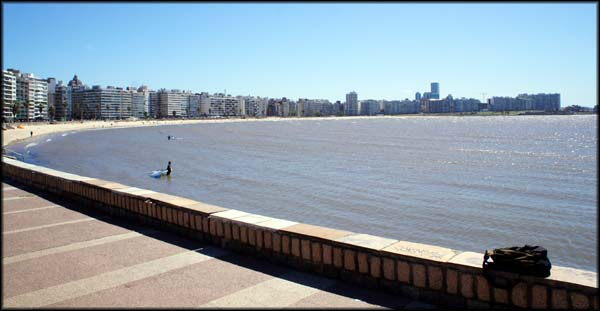A orla de Montevidéu. Agradável.
Caminhei rua abaixo até a orla, e estava um vento extremamente forte e frio. Fui andando, observando, perdendo a timidez para tirar fotos - já que ali estava o pessoal normal da cidade, não turista, que vai para a praia correr e praticar esportes. Fui andando beirando o litoral por bastante tempo, mas o vento frio já estava fazendo doer meus ouvidos.
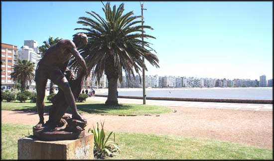Ainda na orla, muitas esculturas pela cidade
Atravessei pro lado oposto da rua, e segui andando pela orla, mas junto aos prédios, o que aliviou um pouco o vento, mas não muito. Percorri toda a orla, até que cheguei no Parque Rodo.
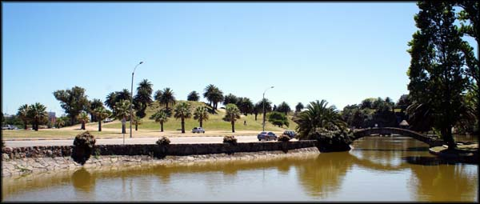Muitas áreas de gramado, ótimo para lazer
Existem muitas áreas lá com imensos gramados, lagos artificiais e esculturas de ferro. Bem naquele estilo europeu, poucas pessoas na areia da praia, muitas espalhadas nos gramados pegando sol e fazendo picnic ou jogando bola com as crianças.
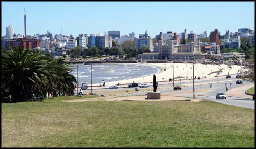Muita área verde próximo à orla, clima bom
E continuei a andar. Andei muito. Comecei a andar pelas ruas internas a fim de chegar no Centro. Andei mais. Olhei no mapa do celular para ver onde eu estava com relação a onde eu queria ir. Estava na metade do caminho. O que fazer? Voltar e pegar a moto, ou continuar andando, já estava com os pés doendo. Decidi continuar andando.
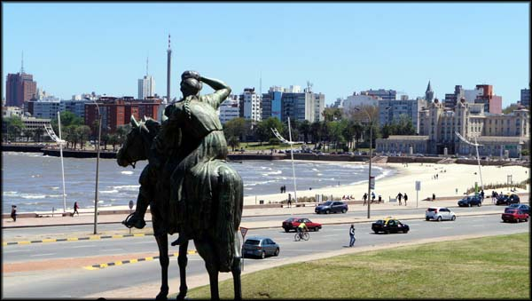Muitas esculturas maneiras espalhadas em áreas verdes
Foi chato por um tempo, porque fiquei andando em ruas internas de bairro, que nada acrescentaram no que toca ao turismo que pretendia fazer. Foi legal por outro lado, porque assim eu pude ver o cotidiano da cidade, as diferenças culturais, tudo aquilo que o turista acaba não captando.
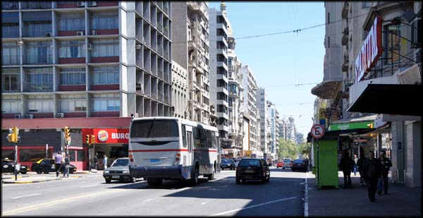O Centro. Me lembrou a Rio Branco no Rio de Janeiro
Centro
Cheguei no Centro, a avenida principal. Vasto comércio, lugares interessantes. Aquela coisa de capital mesmo. Lanchonetes multinacionais, bancos, uns restaurantes legais, lojas de todo o tipo. Tudo fechado, claro, era domingo. Mas muitos ônibus passando e bastante gente a pé também. 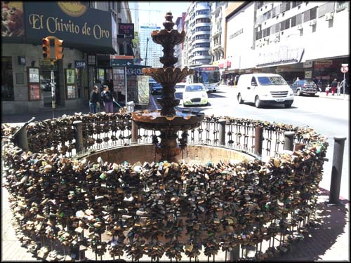Fonte dos Cadeados em Montevidéu
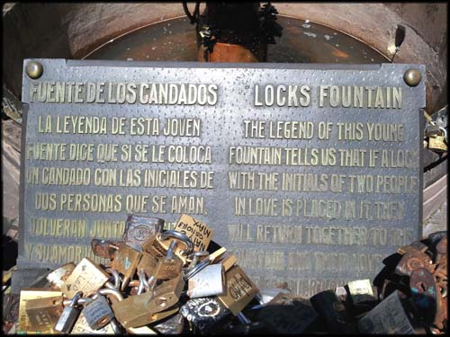A lenda diz que trancando um cadeado na fonte, com as iniciais dos nomes de um casal, eles voltarão àquela fonte e seu amor estará para sempre trancado juntos. Um perigo...
Fui seguindo pelo Centro em direção à Ciudad Vieja (Cidade Velha). Até que cheguei na Plaza Independencia, local das fotos de turismo tradicional. Fiquei um pouco indeciso para puxar a câmera fotográfica lá, tinha um pessoal bem esquisito, um monte de chineses sentados nos bancos, ficaram me olhando... alguns caras com aparência de mendigos… mas dei uma disfarçada, uma volta e pude fazer minhas fotos sem ser incomodado.
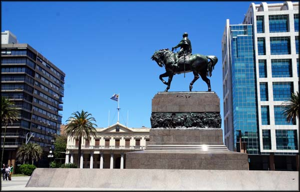Plaza Independencia
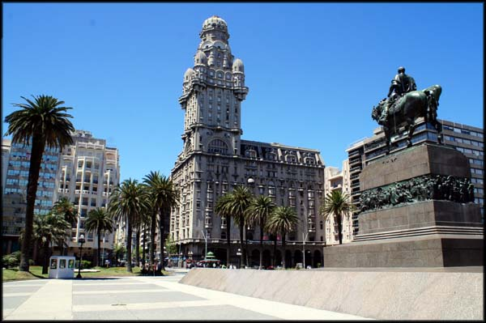Os prédios antigos são ultra conservados
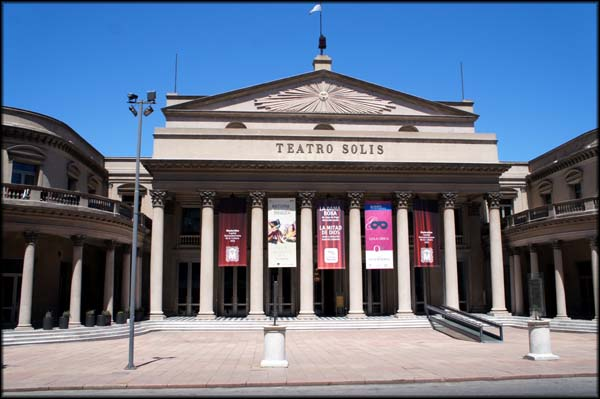O Teatro Solis fica logo ao lado
Ciudad Vieja
Logo ao lado da praça está a entrada para a Cidade Velha, demarcada com um portal da antiga muralha que a separava e protegia, durante as disputas bélico-econômicas entre Portugal e Espanha. 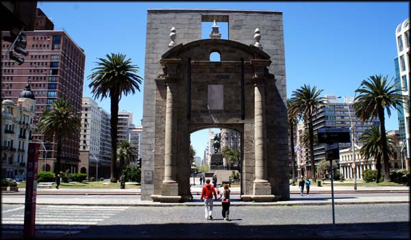O portal da Ciudad Vieja preservado
Eu descreveria a Cidade Velha como um extenso calçadão, com bastante comércio, se dividindo entre modernidades, lanchonetes, bares, espaços de arte e venda de penduricalhos para turistas. Como era domingo, praticamente tudo fechado, e pouca gente circulando.
Fiquei curioso para saber como seria o clima ali em época de turismo normal, deveria ser um agito bacana. Como eu estava viajando fora de temporada, não pude ter essa percepção, mas pude observar melhor as construções.
Continuei andando, e quando dei por conta já estava em um lugar bem diferente. Prédios residenciais bem humildes, a maioria mal tratado. E continuei caminhando, até chegar em um campo de futebol de várzea, onde era disputada uma animada pelada. Ali já era uma área portuária, pelo que pude perceber, muita gente pescando com varas nas pedras.
Pensei em tirar umas fotos, mas achei que chamaria muita a atenção, não sabia onde eu estava exatamente, preferi ser discreto. Comecei a caminhar novamente em direção novamente a Pocitos, mas fui por fora, pela orla, para ver outros lugares. Até que cheguei em um pedaço desse bairro sem muita gente e pude tirar umas fotos.
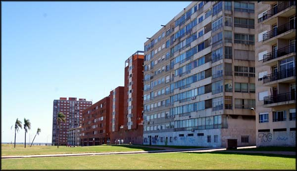Prédios com muitos apartamentos, região de aparência mais humilde
Andei um bom tempo vendo apenas grandes prédios residenciais mulitfamiliares, uma aparência bem pitoresca.
Decidi voltar às ruas principais, por onde eu havia ido. Tinha exagerado na distância percorrida a pé (sempre faço isso no Rio também, oras), e queria achar um lugar bacana para almoçar, coisa que vinha fazendo bem pouco durante a viagem.
Andei mais um montão, passei por restaurantes que não me animaram a ficar. Até que me contentei com um que estava bem movimentado.
Almocei no Gran Bar Castrobo, pedi um entrecort napolitano com batatas noisete, que custava 250 pesos. E um refrigerante. O prato estava bom (apesar da carne estar com muita gordura), e muito bem servido, daria para duas pessoas até. Achei que valeu, mas esperava mais sabor. Escolhi mal o restaurante, certamente, mas haviam poucos abertos também…
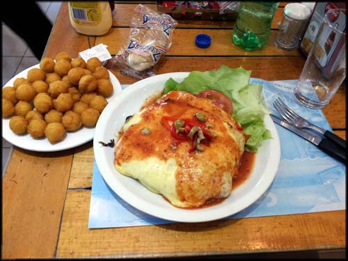Gran Bar Castrobo
Quando terminei o almoço o cansaço das pernas já tinha passado. Antes eu pensava em pegar um ônibus ou táxi para voltar a Pocitos, mas com as pernas descansadas, decidi ir a pé mesmo, por um caminho diferente.
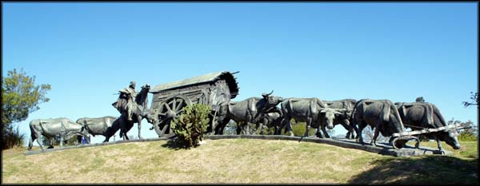Monumento La Carreta, impressionante obra de ferro super detalhada
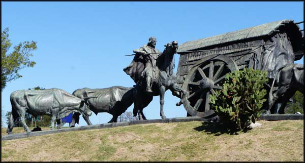Detalhes da La Carreta
Conheci outros lugares, outros parques bem cuidados. Passei em uma praça e me senti no carnaval carioca. Um cara, que até agora não sei se era brasileiro (acho que não era), cantando samba-enredos cariocas, e uma bateria até que bem entrosada, além de passistas improvisadas. Uma festa, e muitos uruguaios lá assistindo e dançando. Que coisa.
Estádio Centenário
Continuei minha caminhada exótica, várias esculturas de ferro superdetalhadas, muito legal. Até que cheguei no Estádio Centenário. Feinho por fora, não tive a curiosidade de ir ver se poderia entrar naquele domingo, ou visitar o museu que eu sabia existir lá dentro. Me contentei com as fotos externas. Alguns mendigos dormindo encostados nas esculturas relacionadas a futebol, várias pichações de protesto contra a exploração pelo poder econômico. 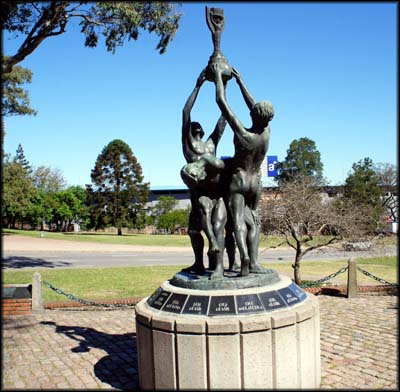Arte em comemoração à Copa do Mundo
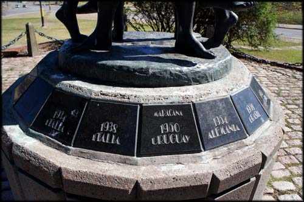Em 1950, Uruguai campeão no Maracanã
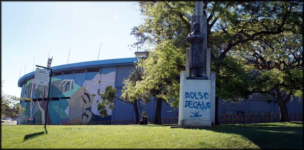Ao fundo o Estádio Centenário. Estátua com pichação de protesto.
Em um campo que fica bem em frente iria começar uma partida de futebol, certamente algum campeonato nacional, tinha bastante gente. Não lembro o nome dos times envolvidos. Flanelinhas pedindo dinheiro para quem estacionava o carro nas vagas em frente… me senti em casa.
Pensei em ver quanto era o ingresso, mas de fora deu para ver, por entre as grades, que o campo de futebol tinha pouca grama para muita areia, e imaginei que não valeria a pena o “espetáculo”. Desisti.
Continuei passeando, procurando evitar as ruas por onde eu já havia passado por ali, para conhecer mais.
Cheguei exausto no hostel, já escurecendo. Andei literalmente o dia todo, só parei para almoçar. Meu novo quarto já havia sido liberado, peguei minhas coisas e me instalei novamente. O quarto era tão bom quanto o outro, não sei porque me mudar de quarto se poderia colocar os novo hóspedes ali sem diminuir-lhes o conforto. Deixa quieto.
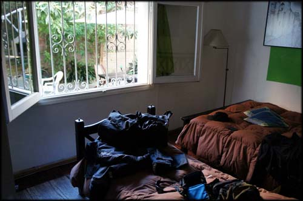Meu novo quarto, até melhor que o outro do qual fui despejado.
Tomei um banho, e fui dormir um pouco, queria sair à noite, talvez chegassem novos hóspedes e animassem o hostel, sei lá. Acordei lá pelas 20:00h, um frio bom, mas o hostel continuava às moscas.
O cansaço batia forte ainda, o breve cochilo não foi o suficiente para recuperar as forças. Me convenci que deveria ir pra rua e aproveitar ao máximo, lutar contra o cansaço, m arrumei, comecei a procurar o que fazer.
Andei por algumas ruas no bairro mesmo, alguns bares abertos, mas vazios. Resolvi que deveria comer alguma coisa, e mais tarde se houvesse algum bar animado eu entraria para beber umas cervejas.
Passei por uma lanchonete, e comi um delicioso chivito. Lanchonete Teodora, que fica a dois quarteirões do hostel. 120 pesos do chivito mais 65 da cerveza… fiquei satisfeito.
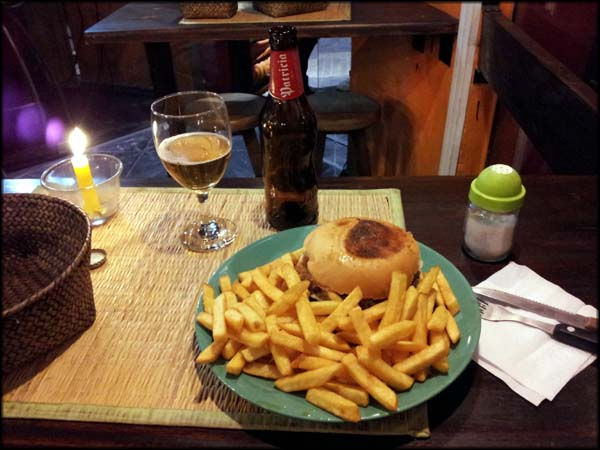Chivito excelente na lanchonete Teodora. E Cerveza !
Depois de me alimentar, andei mais um pouco, mas os raros bares abertos não estavam nada animados. Pensei na cama do hostel, no travesseiro, no cobertor... é, não deu, o cansaço estava vencendo. Voltei e fui dormir mais. No dia seguinte precisaria de mais disposição.